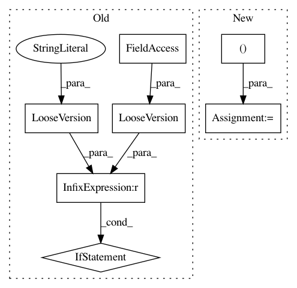

3d53143678cf70ed79772f1b6e384fa33abb55cf,nilearn/__init__.py,,_check_dependencies,#,15
Before Change
raise ImportError("nibabel could not be found,"
" please install it properly to use nilearn.")
if not LooseVersion(nibabel.__version__) >= LooseVersion("1.1.0"):
raise ImportError(
"A nibabel version of at least 1.1 is required"
" to use nilearn. %s was found. Please upgrade nibabel."
% nibabel.__version__)
try:
import gzip
if hasattr(gzip.GzipFile, "max_read_chunk"):
// Monkey-patch gzip to have faster reads on large
After Change
def _check_dependencies():
_required_module_versions = [("numpy", "1.6.0"),
("scipy", "0.9.0"),
("sklearn", "0.10"),
("nibabel", "1.1.0")]
for module_name, minimum_version in _required_module_versions:
_import_module_with_version_check(module_name, minimum_version)
try:
import gzip
if hasattr(gzip.GzipFile, "max_read_chunk"):
// Monkey-patch gzip to have faster reads on large
In pattern: SUPERPATTERN
Frequency: 3
Non-data size: 7
Instances
Project Name: nilearn/nilearn
Commit Name: 3d53143678cf70ed79772f1b6e384fa33abb55cf
Time: 2014-07-16
Author: loic.esteve@ymail.com
File Name: nilearn/__init__.py
Class Name:
Method Name: _check_dependencies
Project Name: matplotlib/matplotlib
Commit Name: 34b8eb46e5de6b760bc131e461755042716e259d
Time: 2018-02-07
Author: story645@gmail.com
File Name: lib/matplotlib/category.py
Class Name:
Method Name:
Project Name: scipy/scipy
Commit Name: cf51cef6babcba0b33bf6ed4e135d7137873b311
Time: 2013-09-11
Author: pav@iki.fi
File Name: scipy/sparse/tests/test_base.py
Class Name: _TestCommon
Method Name: test_ufunc_overrides